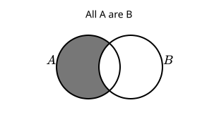
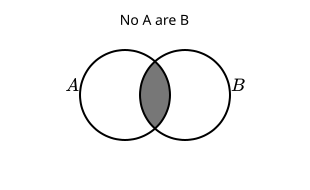
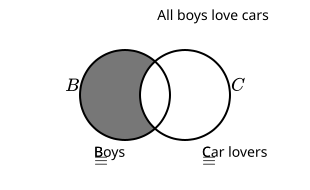
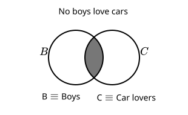

Section 1.1 Notes on: Statements, Negations, and Quantifiers
These notes cover the fundamental concepts of statements, negations, and quantified statements as introduced in our material.
Subsection 1.1.1 What is a Statement?
- A statement is defined as a declarative sentence that has a truth value. This means the sentence is either true or false, even if we don’t know which one it is.
- Examples of Statements:
- Today is Monday.
- The ground is wet.
- In this class, we will consider declarative opinions as statements for the sake of learning, even though the truth values of opinions can be subjective.
- A sentence that does not have a truth value (like a question or a command) is not a statement.
Subsection 1.1.2 Negating Simple Statements
- In logic, the negation of a statement is another statement which has the opposite truth value from the original statement. If the original statement is true, its negation is false, and vice-versa.
- Forming negations of simple statements can be straightforward. Often, adding "not" or a phrase like "It’s not true that..." works.
- Examples of Negating Simple Statements:
- Statement:
- Negation: Today is not Monday.
- Negation: It’s not true that today is Monday.
- Statement:
- Negation: The ground is not wet.
- Negation: It’s not the case that the ground is wet.
Subsection 1.1.3 Quantified Statements (Categorical Statements)
- A quantified statement, also known as a categorical statement, is a statement that includes a quantifying word or phrase.
- Quantified statements are classified as either Universal or Existential.
Subsubsection 1.1.3.1 Existential Statements
- Existential statements are quantified statements that assert the existence of at least one element in a category.
- They typically use the word "Some" or related phrases.
- The word "some" in logic means "at least one, possibly more". It does not imply that there must be more than one.
- Examples of Existential Statements:
- "Some A are B."
- "Some A aren’t B."
- Some boys don’t love cars.
- Some boys love cars.
Subsubsection 1.1.3.2 Universal Statements
- Universal statements are quantified statements that affirm or deny a quality about an entire category.
- They typically use words like "All" or "No".
- "All A are B" is considered a positive universal statement.
- "No A are B" is considered a negative universal statement.
- Examples of Universal Statements:
- "All A are B"
- "No A are B"
- All boys love cars.
- No boys love cars.
Subsection 1.1.4 Diagramming Quantified Statements
Venn diagrams can be used to represent quantified statements visually. These diagrams typically involve overlapping circles representing categories.
- Diagramming Universal Statements:
-
All A are B: To diagram this, the region of A that is not part of B is shaded. The shading indicates this region is empty (has no elements).

Figure 1.1.1. A Venn diagram with two overlapping circles, A and B. The part of circle A that does not overlap with circle B is shaded. -
No A are B: To diagram this, the region where A and B overlap (the football-shaped region) is shaded. The shading indicates this region is empty.

Figure 1.1.2. A Venn diagram with two overlapping circles, A and B. The overlapping region between A and B is shaded.
-
All A are B: To diagram this, the region of A that is not part of B is shaded. The shading indicates this region is empty (has no elements).
- Diagramming Existential Statements:
-
Some A are B (or Some B are A): This is diagrammed by placing an X in the region where A and B overlap. This indicates that at least one element exists in that specific region.
Figure 1.1.3. A Venn diagram with two overlapping circles, A and B. An ’x’ is placed in the overlapping region between A and B. -
Some A are not B: This is diagrammed by placing an X in the region of A which is not shared with B. This indicates at least one element exists in that specific region.
Figure 1.1.4. A Venn diagram with two overlapping circles, A and B. An ’x’ is placed in the part of circle A that does not overlap with circle B. -
Some B are not A: This is diagrammed by placing an X in the region of B which is not shared with A. This indicates at least one element exists in that specific region.
Figure 1.1.5. A Venn diagram with two overlapping circles, A and B. An ’x’ is placed in the part of circle B that does not overlap with circle A.
-
Some A are B (or Some B are A): This is diagrammed by placing an X in the region where A and B overlap. This indicates that at least one element exists in that specific region.
- In both universal and existential diagrams, the unmarked or unshaded regions may or may not have elements.
Examples with Specific Categories:
- All boys love cars:

Figure 1.1.6. A Venn diagram with two overlapping circles, B (Boys) and C (Carlovers). The part of circle B that does not overlap with circle C is shaded. - Some boys love cars:
Figure 1.1.7. A Venn diagram with two overlapping circles, B (Boys) and C (Carlovers). An ’x’ is placed in the overlapping region between B and C. - No boys love cars:

Figure 1.1.8. A Venn diagram with two overlapping circles, B (Boys) and C (Carlovers). The overlapping region between B and C is shaded. - Some boys don’t love cars:
Figure 1.1.9. A Venn diagram with two overlapping circles, B (Boys) and C (Carlovers). An ’x’ is placed in the part of circle B that does not overlap with circle C.
Subsection 1.1.5 Negating Quantified Statements
Negating quantified statements involves changing the type of statement (universal to existential and vice-versa) and often changing the quality (affirmative to negative and vice-versa).
- The negation of "All A are B" is "Some A are not B".
- The negation of "Some A are B" is "No A are B".
- There is a difference between conversational English and formal logic when negating universal statements.
- In conversational English, one might negate "All Dogs are Mammals" by saying "All Dogs are not Mammals" or "Not All Dogs are Mammals".
- However, in symbolic logic, a universal statement must be negated with an existential statement.
- The negation of "All Dogs are Mammals" is "Some Dogs are not Mammals". This is because we need to assert the existence of at least one element (a dog) which defies the original "all dogs are mammals" statement. Using the word "Some" achieves this.
Examples of Negating Quantified Statements:
- Negation of "All boys love cars" is "Some boys don’t love cars". (Correct option B in Top Hat Question #1)
- No birds can flySome birds can fly
- The source material diagrams this as:
Figure 1.1.12. Two Venn diagrams side-by-side. The first diagram shows ’No birds are flying things’ (overlap of B and F is shaded). The second diagram shows ’Some birds are flying things’ (an ’x’ in the overlap of B and F). A double-headed arrow connects the two diagrams, labeled ’Negation’. (Note: The diagrams use B for Birds and F for Flying things). - The source notes that "Some birds are flying things" is logically equivalent to "Some flying things are birds". Both are represented by an X in the overlapping region of Birds (B) and Flying things (F).
Figure 1.1.13. Two Venn diagrams side-by-side. The first diagram shows ’Some birds are flying things’ (an ’x’ in the overlap of B and F). The second diagram shows ’Some flying things are birds’ (an ’x’ in the overlap of F and B - which is the same region). A double-headed arrow connects the two diagrams, labeled ’is logically equivalent to’. - Therefore, both "Some birds can fly" and "Some flying things are birds" are listed as possible negations of "No birds can fly". (Options B and F in Top Hat Question #2).
- The source material diagrams this as: